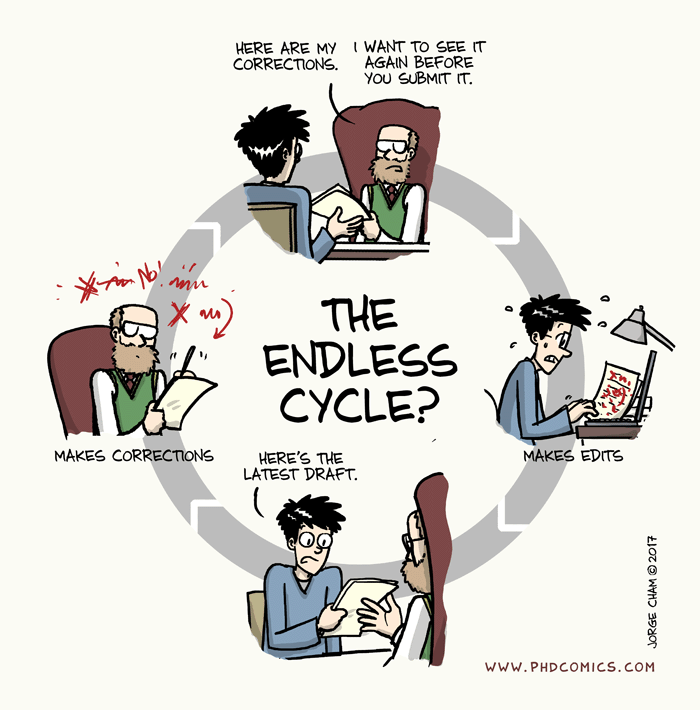

2024

J. Phys. Chem. Lett.
Joseph Frimpong, Zhen-Fei Liu
J. Phys. Chem. Lett., 15(8): 2133-2141
An accurate description of the interfacial quasiparticle electronic structure is key to the design of heterogeneous materials. While the first-principles GW approach is state-of-the-art, the computational cost is high for large interface systems. This has led to the substrate screening GW approach for weakly coupled interfaces, which breaks down for covalently bonded interfaces. In this work, we present the generalized substrate screening GW approach, based on the following two considerations: (i) the contribution of the interfacial covalent bond to the polarizability can be efficiently calculated with a low energy cutoff; (ii) the contribution of the deprotonated adsorbate to the interface polarizability can be well approximated by that of the protonated molecule. Our approach is exemplified using interfaces formed between benzene-1,4-dithiol (BDT) and Au(111), which feature the widely used Au-S bonds in experiments. Our work provides a robust and simple scheme for accurate and efficient GW calculations of covalently bonded interfaces.
JACS
Rajendra Maity, Otto Dungan, Frédéric A. Perras, Jingwei Li, Daohua Liu, Sumei Ren, Dan Lehnherr, Zheng Huang, Eric M. Phillips, Moses Adeyemo, Joseph Frimpong, Timothy Quainoo, Zhen-Fei Liu, Long Luo
Journal of the American Chemical Society, 146(49): 34141-34151
Pharmaceutical synthesis often requires hydrogen isotope labeling for drug development and mechanistic studies. Traditional methods suffer from limitations in scope and selectivity. Here, we present a photocatalytic hydrogen isotope exchange (HIE) method using CdS quantum dots that operates via dual pathways: direct HAT from the CdS quantum dot surface and photogenerated hole-mediated oxidation. This dual mechanism enables broad applicability to various pharmaceutical compounds, including complex drug molecules like celecoxib, roflumilast, and mavoglurant. The method shows excellent deuterium incorporation with high precision and minimal byproduct formation. Our work demonstrates the potential of quantum dot photocatalysis for pharmaceutical isotope labeling applications.
Chem. Mater.
Joseph Frimpong, Sandip Aryal, Tejas Karun, Zhen-Fei Liu
Chemistry of Materials, 36(23): 11519-11528
Quantum dots (QDs) are semiconductor nanoparticles with unique optical and electronic properties that make them valuable for various applications including solar cells, LEDs, and biological imaging. The surface chemistry of QDs plays a crucial role in determining their properties and stability. In this work, we use first-principles density functional theory calculations to investigate ligand exchange processes and surface passivation mechanisms in CdS quantum dots. We examine how different ligands interact with CdS surfaces and how these interactions affect the electronic structure and optical properties of the QDs. Our calculations provide insights into the binding energies, electronic structure changes, and passivation effects of various ligand molecules on CdS QD surfaces.
2023
Faraday Discuss.
Nibedita Behera, Disni Gunasekera, Jyoti P. Mahajan, Joseph Frimpong, Zhen-Fei Liu, Long Luo
Faraday Discuss., 247: 45-58
Here, we report an electrochemical protocol for hydrogen isotope exchange (HIE) at alpha-C(sp3)-H amine sites. Tetrahydroisoquinoline and pyrrolidine are selected as two model substrates because of their different proton transfer (PT) and hydrogen atom transfer (HAT) kinetics at the alpha-C(sp3)-H amine sites, which are utilized to control the HIE reaction outcome at different applied alternating current (AC) frequencies. We found the highest deuterium incorporation for tetrahydroisoquinolines at 0 Hz (i.e., under direct current (DC) electrolysis conditions) and pyrrolidines at 0.5 Hz. Analysis of the product distribution and D isotope incorporation at different frequencies reveals that the HIE of tetrahydroisoquinolines is limited by its slow HAT, whereas the HIE of pyrrolidines is limited by the overoxidation of its alpha-amino radical intermediates. The AC-frequency-dependent HIE of amines can be potentially used to achieve selective labeling of alpha-amine sites in one drug molecule, which will significantly impact the pharmaceutical industry.
2022
J. Phys. Chem. Lett.
Sandip Aryal, Joseph Frimpong, Zhen-Fei Liu
J. Phys. Chem. Lett., 13(43): 10153-10161
Quantum dot (QD) assemblies are nanostructured networks made from aggregates of QDs and feature improved charge and energy transfer efficiencies compared to discrete QDs. Using first-principles many-body perturbation theory, we systematically compare the electronic and optical properties of two types of CdS QD assemblies that have been experimentally investigated: (i) QD gels, where individual QDs are covalently connected via di- or polysulfide bonds, and (ii) QD nanocrystals, where individual QDs are bound via van der Waals interactions. Our work illustrates how the electronic and optical properties evolve when discrete QDs are assembled into 1D, 2D, and 3D gels and nanocrystals, as well as how the one-body and many-body interactions in these systems impact the trends as the dimensionality of the assembly increases. Furthermore, our work reveals the crucial role of the di- or polysulfide covalent bonds in the localization of the excitons, which highlights the difference between QD gels and QD nanocrystals.
2021
J. Phys.: Condens. Matter
Joseph Frimpong, Zhen-Fei Liu
J. Phys.: Condens. Matter, 33(25): 254004
The modular nature and unique electronic properties of two-dimensional (2D) covalent organic frameworks (COFs) make them an attractive option for applications in catalysis, optoelectronics, and spintronics. The fabrications of such devices often involve interfaces formed between COFs and substrates. In this work, we employ the first-principles GW approach to accurately determine the quasiparticle electronic structure of three 2D carbonyl bridged heterotriangulene-based COFs featuring honeycomb-kagome lattice, with their properties ranging from a semi-metal to a wide-gap semiconductor. Moreover, we study the adsorption of these COFs on Au(111) surface and characterize the quasiparticle electronic structure at the heterogeneous COF/Au(111) interfaces. To reduce the computational cost, we apply the recently developed dielectric embedding GW approach and show that our results agree with existing experimental measurement on the interfacial energy level alignment. Our calculations illustrate how the many-body dielectric screening at the interface modulates the energies and shapes of the Dirac bands, the effective masses of semiconducting COFs, as well as the Fermi velocity of the semi-metallic COF.